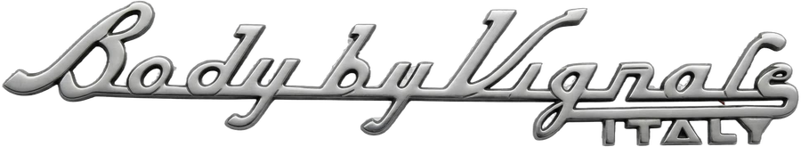
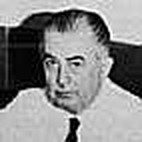
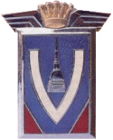

Carrozzeria Vignale · Torino, founded 1948
About Carrozzeria Vignale
The coachbuilder behind the Gamine — and behind cars for Ferrari, Maserati and Lancia.

Alfredo Vignale was born in 1913. As a seventeen-year-old boy he already worked for Stabilimenti Farina, then managed by Giovanni Farina, the older brother of Pinin. He became an all-round technician, and his first steps in coachbuilding only started in his mid-thirties, when he traded an old motorbike for a Fiat Topolino. The coachwork of the Topolino was so rusty that Alfredo decided to give it an aluminium body. A second body for a Topolino was made, and this one even got attention from the English ‘Autocar’ magazine.
In 1948 the Carrozzeria Vignale was founded at Via Cigliano, Turin. It became a well-known Italian coachbuilding company. Vignale designed and built cars for Ferrari, Maserati, Lancia and many others.
Alfredo Vignale also started producing cars under his own name. In 1961 he opened a factory near Fiat’s Mirafiori factory in Grugliasco/Turin. (The Vignale logo shows the famous church in Turin.) In this factory a whole range of Vignale cars was produced using conveyor-belt production methods.

Cars built at Carrozzeria Vignale
Mainly using rolling chassis from Fiat, the following cars were built:
- Vignale Gamine — the two-seater convertible on a Fiat 500 chassis this site is dedicated to
- Vignale 125/Samantha
- Vignale 124/Eveline
- Vignale 1500
- Vignale 850 Spider
- Vignale 850 Coupé 2+2
- Vignale 850 Coupé 4
Want the full picture? See Vignale Creations for the complete chronological overview of cars built and designed by Carrozzeria Vignale, from the 1946 Cisitalia 202 CMM to the 1969 DeTomaso Pantera.
Curious about the factory itself? Take a photo tour of Carrozzeria Vignale in Grugliasco/Turin, or browse the other cars built under the Vignale name: the 125/Samantha, 124/Eveline, 1500 and 850.
In December 1969 Alfredo sold his Carrozzeria Vignale to DeTomaso Automobili. DeTomaso, like the Ghia Studios, already belonged to Ford’s Italian product development group. Three days after having sold his company, Alfredo died in a car crash while driving a Maserati…
Carrozzeria Vignale, being a very modern factory, was then used to build the mid-engine DeTomaso Pantera sports cars.
